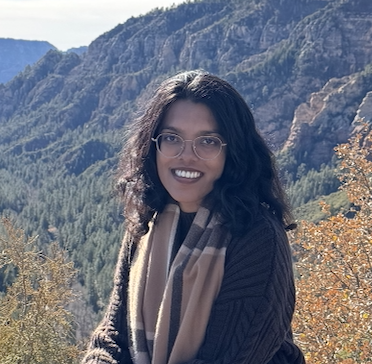

Jharshini Vejaya Kumar
About Me
Background
I was born and raised in Penang, Malaysia, and moved to the US in 2016 for my undergraduate studies. I attended the University of California San Diego, where I earned my Bachelor's in International Business. I then spent four years in San Francisco working as a tax consultant. I am now pursuing my Master's in Computer Science at Northeastern University's Boston campus.
Hobbies & Interests
Outside of class, you'll find me at pilates, curled up with a good book, or catching up on TV shows. Comedy, fantasy, and historical fiction are my go-to genres, though I like branching out from time to time. Some of my favorites are Friends, The Office, Schitt's Creek, Modern Family, Game of Thrones, House of the Dragon, and The Gilded Age. Currently, I am watching Peaky Blinders.
Exploring Boston
While I was in San Francisco, I also enjoyed hiking. I loved discovering new trails around the city and the wider Bay Area. Since moving to Boston, where hiking trails are not quite as close to home, I have traded hiking for city walks — exploring local cafés, restaurants, and charming spots around town.
If you are new to Boston, or are simply visiting the city, check out these cafés and local spots!
